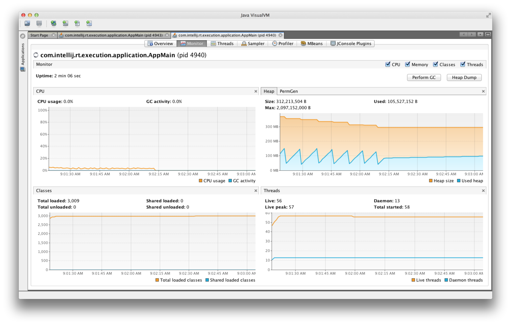
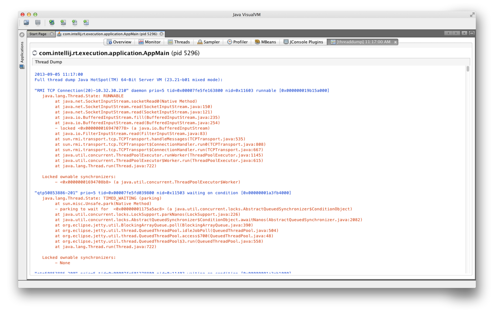

Ytelse og stabilitet 101
Javazone, 11. september 2013
Stefan Magnus Landrø
- 10++ år med progging
- Faggruppeleder Cloud og Big data i BEKK

Agenda
- Ressursmangel
- Monitorering av JVM med JVisual VM (demo)
- Ytelsestesting med Gatling (demo)
- Analyse av Thread dumps (demo)
- Analyse av Heap dumps (demo)
- Erfaringer fra krigen (demo)
- Oppsummering
Ressursmangel
Ressursmangel
- CPU (super computing)
- RAM (out of memory exception)
- Ressurser som ikke er thread safe
- Database connection
- HTTP connection (endres i SPDY!)
- XML Marhaller (object <-> XML)
- ...
- Threads (thread starvation)
- Etc etc ...
Noen ganger kan man betale seg ut av ressursmangel!
Noen ganger kan man kode seg ut av ressursmangel!
Noen ganger kan man enkelt kode seg ut av ressursmangel!
Monitorering
JVM monitoreres over JMX
- Java VisualVM
- JConsole
- ...

Eksponerte verdier
- CPU
- Heap Memory
- Heap Memory dump
- Threads
- Thread dump
- Profilere CPU
- Profilere Memory
- ...
DEMO
Ytelsestesting
Gatling
- Ytelsestestverktøy
- Open source (Apache 2)
- Scala DSL
- Actors (Akka)
- Asynkron HTTP klient (Netty)
Teste med Gatling
- Opprett prosjekt med maven archetype
- Skriv tester i IDE (IntelliJ)
- Kjør test i IDE eller maven
- Kjør tester (kontinuerlig) på Jenkins
DEMO
Thread dumps
Thread dump
- State til alle tråder
- Call stack til alle tråder

Enum Thread.State
- RUNNABLE - executing in the JVM
- BLOCKED - blocked waiting for a monitor lock
- WAITING - waiting indefinitely for another thread to perform a particular action
- TIMED_WAITING - waiting for another thread to perform an action for up to a specified waiting time
BLOCKED
WAITING
TIMED_WAITING
Bad news?
kill -QUIT <PID>
DEMO
Heap dumps
Snapshot av minnet til en java process
-XX:+HeapDumpOnOutOfMemoryError
jmap -dump:format=b,file=<filename> <pid>
DEMO
Krigserfaring
Eksempel:
- Heap dump Apache CXF Client
- WS-Adressing og MTOM
- PDF payload
// Pseudo code
public class MAPCodec extends AbstractSoapInterceptor {
protected final Map<String, Exchange> uncorrelatedExchanges;
public void handleMessage(SoapMessage m) {
if (outboundMessage)
uncorrelatedExchanges.put(uuid, m)
else
uncorrelatedExchanges.remove(uuid);
}
public void handleFault(SoapMessage m) {
uncorrelatedExchanges.remove(uuid);
}
}
DEMO
Eksempel:
- Thread dump JBoss PDP (XACML)
- Sikkerhetsrammeverk
- Sjekker tilgangsrettigheter mot eksterne kilder
Name: http-/0.0.0.0:8443-295
State: WAITING on java.util.concurrent.locks.ReentrantLock$NonfairSync@27c85959 owned by: http-/0.0.0.0:8443-266 Total blocked: 29 Total waited: 48
Stack trace:
sun.misc.Unsafe.park(Native Method)
java.util.concurrent.locks.LockSupport.park(LockSupport.java:186)
java.util.concurrent.locks.AbstractQueuedSynchronizer.parkAndCheckInterrupt(AbstractQueuedSynchronizer.java:834)
java.util.concurrent.locks.AbstractQueuedSynchronizer.acquireQueued(AbstractQueuedSynchronizer.java:867)
java.util.concurrent.locks.AbstractQueuedSynchronizer.acquire(AbstractQueuedSynchronizer.java:1197)
java.util.concurrent.locks.ReentrantLock$NonfairSync.lock(ReentrantLock.java:214)
java.util.concurrent.locks.ReentrantLock.lock(ReentrantLock.java:290)
org.jboss.security.xacml.core.JBossPDP.evaluate(JBossPDP.java:291)
no.nav.modig.security.tilgangskontroll.policy.pdp.picketlink.PicketLinkDecisionPoint.evaluate(PicketLinkDecisionPoint.java:49)
no.nav.modig.security.tilgangskontroll.policy.pep.PEPImpl.evaluate(PEPImpl.java:31)
no.nav.modig.security.tilgangskontroll.policy.pep.PEPImpl.hasAccess(PEPImpl.java:43)
no.nav.modig.security.tilgangskontroll.policy.pep.PEPImpl.assertAccess(PEPImpl.java:36)
Stuff stuff = null;
lock.lock(); // linje 291
try {
stuff = getStuffFromCache();
if (stuff = null) {
stuff = expensiveOperation();
}
finally {
lock.unlock();
}